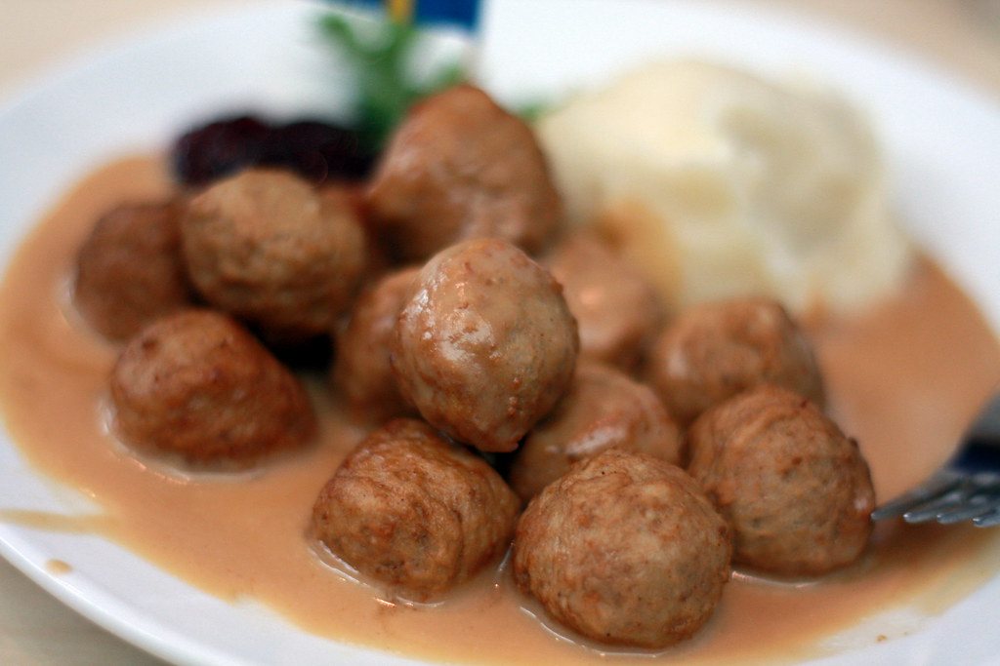

Home
Swedish Meatballs

Description
Swedish meatballs are tender, flavorful meatballs seasoned with warm spices and simmered in a rich, creamy gravy. Made with a delicious blend of ground meat, breadcrumbs, onions, and herbs, they offer a perfect balance of savory flavor and comforting texture.
Often served over creamy mashed potatoes or buttered noodles, Swedish meatballs make a hearty and satisfying meal for any occasion. A spoonful of tangy lingonberry sauce or cranberry relish adds a bright contrast to the rich gravy, making this classic dish even more irresistible.
Ingredients
- Ground beef 1 lb (450 g)
- Breadcrumbs ½ cup
- Milk ¼ cup
- Small onion, finely chopped 1
- Garlic, minced 2 cloves
- Large egg 1
- Salt 1 teaspoon
- Black pepper ½ teaspoon
- Ground allspice ¼ teaspoon
- Ground nutmeg ¼ teaspoon
- Butter 3 tablespoons
- All-purpose flour 3 tablespoons
- Beef broth 2 cups
- Heavy cream ½ cup
- Worcestershire sauce 1 teaspoon
- Fresh parsley, chopped For garnish
Steps
-
In a bowl, combine the breadcrumbs and milk. Let them sit for 5 minutes until softened.
-
Add the ground beef, onion, garlic, egg, salt, pepper, allspice, and nutmeg. Mix gently until well combined.
-
Shape the mixture into small meatballs, about 1 inch in diameter.
-
Melt 1 tablespoon of butter in a large skillet over medium heat. Brown the meatballs in batches, turning occasionally, then transfer them to a plate.
-
Add the remaining butter to the skillet. Whisk in the flour and cook for 1 minute.
-
Gradually whisk in the beef broth, heavy cream, and Worcestershire sauce. Simmer until the sauce thickens.
-
Return the meatballs to the skillet and simmer for 10–15 minutes, or until fully cooked and coated in the creamy sauce.
-
Garnish with fresh parsley and serve over mashed potatoes, buttered noodles, or rice.